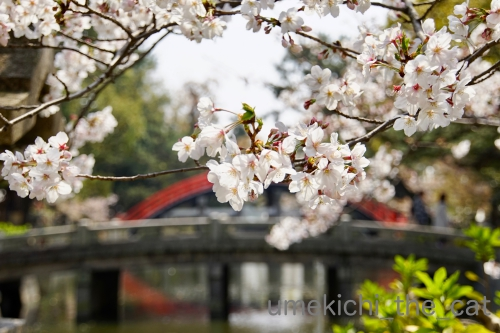

猫型のし袋 [梅吉]

大容量の猫型のし袋です＾＾
お腹部分のチャックを開けて「お気持ち」を入れてくださいね。
のし袋さんのご機嫌によってはチャックを開けることが難しいかもしれませんw
がぶっと来るかもしれないのでご使用は自己責任でお願いします(*>艸<)

のし袋さん、キャットタワーの上に行っちゃいました。
と、あくびですねー！

それ、あくび顔？ (＠◇＠)
変顔、いただきました！

のし袋さん、お疲れ様でしたー。
〜ちらっと見てください！じっと見ちゃダメ！！〜

空中浮遊する梅吉・・・・に見えますか？
難しいかなぁ・・・
コンクリートの継ぎ目が入っているのが敗因かなw
大きめ画像だとボロが出るので小さい画像にしています。
先週末は気温が20℃近くなったので（買った）お弁当を持ってお花見に行きました。

目的地途中の住吉大社でちらりとお花見。
桜の向こうに見えるのは太鼓橋です。
4月に入って外国人も含めて観光客＆参拝客が多くなってきました。
赤ちゃんを連れたお宮参りの方達の姿も目立ちます＾＾
境内入口の枝垂れ桜も良い感じです＾＾
途中の公園ではネモフィラが満開に。
桜も満開でしたがブルーシートが敷かれタープが建って
椅子とテーブルが並べられ持ち込まれたスピーカーからは音楽が大音量で・・・
おまけにBBQ用の炭火の煙で桜が霞んで見えます (-_-メ)
お花見は心静かにしたいのでここはスルー。
目的地はここです！
近所の穴場お花見スポット「なんちゃって千鳥ヶ淵」。
少人数の家族連れがちょっとしたお弁当を持ってふらりとやって来ます。
静かに桜を楽しめる貴重な場所。
桜の樹の下で買い込んだお惣菜などをいただきました＾＾
もちろんビール付き♪
良いお花見でしたよー。
この場所、昨年9月の台風で相当木が折れているんじゃないかと心配していたのですが
折れた枝も見当たらないほど無傷でした。
川幅の空間が風を逃す道になったのでしょうね。
帰りがけにツバメさんの巣を発見。
ご夫婦交代で頑張っていらっしゃいました。
今年は来週末もう一箇所お花見を予定しています。
交通の便の悪い山奥の美術館の展覧会＆お花見に行くのですが
（これでピンと来る方、いらっしゃるかもね。）
お花とお天気はどうなるかなぁ・・・
行ってみたい！と思っている方も多い場所だと思うので記事にしますねー。
もりもりの内容になるかも。なので梅吉は登場しないかもしれません(⌒-⌒;
2019-04-11 00:00
nice!(85)
コメント(28)

カフェオレ色の梅吉

梅吉 2023年8月10日 永眠


梅吉と出会った譲渡会

犬猫の理由なき殺処分ゼロ
妄想広告
UMEKICHI 光

爆発的に早い！
時々攻撃的！
Thanks to Mr.Boss365
爆発的に早い！
時々攻撃的！
Thanks to Mr.Boss365

猫型のし袋さんにお気持ちいっぱい詰めさせて下さい。この"のし"どうしたんですか? 梅吉さん嫌がってませんね。空中浮遊も(なんとか)見えましたよ。
住吉大社の太鼓橋には桜が似合いますねー。
by zombiekong (2019-04-11 02:04)
中身入っていなくていいからそののし袋さんが欲しいです。
空中遊泳、最初は見えなーいって思ったのですが、画面を上下にスクロールしながらチラ見したら見えました！
なんちゃって千鳥ヶ淵、いいですね！
ほんっと、お花見は静かに楽しみたいです。とはいえ、いい場所はどうしても混んでしまう。。。。
by ChatBleu (2019-04-11 06:09)
背中から入れるタイプの方が安全でしょうね。
しょっちゅう赤線描かれてます＾＾；
by ぽちの輔 (2019-04-11 06:31)
のし袋さん、ガブと来たら宝くじ大当たり^^するかもです。
by ニコニコファイト (2019-04-11 06:50)
のし袋さんごと持ち帰りたくなります(#^.^#)
お腹のチャックは無理でもお口からなら♪
by きぃ (2019-04-11 08:27)
「なんちゃって千鳥ヶ淵」。確かにー(^｡^)
お花見、人の声でうるさいのはともかく、
スピーカー大音量はあかんよね！
by よーちゃん (2019-04-11 09:00)
「お腹のチャック、そう簡単に開けらると思うにゃよ～」という梅吉さんの目が好きです(#^^#)
おばちゃんは噛まれても蹴られても負けへんで～。
ガバッと開けて愛をいっぱい注入しちゃいますよん♪
なんちゃって千鳥ヶ淵最高！
桜まつりなどで賑やかすぎると落ち着きません。
台風の被害が少なくて何よりでした。
by ゆきち (2019-04-11 12:33)
梅吉さん、大容量の猫型のし袋ですね〜（笑）
『お気持ち』が大きすぎて、
入れるのに追いつきませ〜ん（笑）
慣れてないので、
お腹のチャックを探させてくださいな。
がぶっは怖いです（笑）
『変顔』白目と争えるくらいですね（笑）
じっとみても、浮いているように見えました（笑）
そんな特技？（笑）
お花見、10年くらいは店内から見る程度、
歳をとって混雑苦手が加速してます（笑）
お弁当を持って出かけたのは、
忘れるくらい昔のことです。
楽しめるうちに楽しんでください。
なんちゃって千鳥ヶ淵、中々良いですね。
ツバメの子育ても見られて、幸運が舞い込みそうです。
こちらまで、幸せが届きますね。
by kiki (2019-04-11 13:09)
お弁当持ってお花見良いですね！
住吉大社の桜、綺麗ですね(^^)
by ma2ma2 (2019-04-11 17:11)
猫型のし袋の梅吉さん、行儀良く撮影させてくれましたね。
でも、最後のアクビ顔に何故かホッとします。
お総菜食べながらビールを飲んで、お花見の時期ですね。
こっちはやっと咲き始めましたがまだまだ満開にはほど遠いです。お花見が本当に待ち遠しいです(^^)
by kou (2019-04-11 17:17)
桜もネモフィラも素敵ですね～♪
そして梅吉さんの変顔(^∧^)
by ふにゃいの (2019-04-11 19:24)
噛まれてもいいので、勇気を出してチャックを開けたいな^^;
ネモフィラがとても綺麗ですね。
お弁当を持って行く花見は最高ですね＾＾
by riverwalk (2019-04-11 21:00)
梅吉さん熨斗袋、ちゅーる持ってたら
お腹のチャック開けさせてくれるかな=(^.^)=
うちは最近大御所がへそ天で寝るので
チャックを探そうとすると向きを変えてくれます(*_*)
「なんちゃって千鳥ヶ淵」の桜、見事ですねぇ♪( ´▽｀)
by ニッキー (2019-04-11 21:49)
のし袋梅さん、堂々とした表情がステキですー。
お腹のチャック、ううむ。仰向けになって万歳しているときならそぉ～っと開けられるかなあ。^^;
空中浮遊・梅吉さん、体と影？が離れていているようで、たしかにそう見えるかも。^^)
by yes_hama (2019-04-11 22:01)
来週もお花見なんて羨ましいですね
流石に江戸の花見は終わりです
by (。・_・。)２ｋ (2019-04-11 22:41)
なんちゃって千鳥ヶ淵、いい感じですね〜。
あくび顔も最高です^^。
by nachic (2019-04-12 00:51)
こんにちは。
「猫型のし袋」梅吉君の正面写真良いですね。よだれかけ？と一瞬思いました。
多少？固まっている感じもしますが、あくびも名演技ですね（笑）
「お腹部分のチャック」操作？したいです。
「チャック」最近聞かない？（笑）ジッパー？ファスナー？
やはり「チャック」が適切な言葉ですね（爆）です。
梅吉君！！空中浮遊してますね？今度すももで試してみます。
ネモフィラ？ボケ感あり良い写真ですね。
お花見！！花に酔い？ビールで酔い？心地良い感じですね！？(=^･ｪ･^=)
by Boss365 (2019-04-12 10:27)
のしっとポーズの梅吉さん型のし袋？
決まってますね～！
あくび顔からのペロッとサービスも満点＾＾お腹なでなでしてチャック探したい～＾＾
空中浮揚、一瞬あれって思いましたよ！＾＾
太鼓橋の手前の桜、素敵＾＾
お花見スポットいろいろありますね～＾＾
by sana (2019-04-12 16:00)
梅吉さん、お腹チャック全開でお願いします(笑
あ~ネモフィラが綺麗だ。
な～んていったら桜が焼きもちを焼きそうですね。
お花見はこの年になったら静かにぼ～っと眺めたいですよね。
万博公園は賑やかした＆フリスビーも飛んできたぜ。
マナー違反なアホがいなかったのが救いです。
なんちゃって千鳥ヶ淵いい感じ。
by marimo (2019-04-12 19:55)
お腹のチャック見つけるまでモフモフさせてもらいますよ(*´ω｀*)覚悟！
by palpal (2019-04-12 21:15)
こ、今度はのし付きエプロンですか！
お似合いです！（*´∀｀*）
チャックを開けたらカリカリがたくさんでてきそーですよ。
あくび前の顔、ナイスショット！
この表情、わたしも結構好きです^^
空中浮遊は、目線をちょっとずらすと見えます！！（笑）
ネモフィラ、集団で見ると美しいですよね。
関東ではひたち海浜公園のが有名なのですが、一度見たいんです〜
by Ja-Kou66 (2019-04-13 00:16)
猫型のし袋～
いっぱい入りそうだニャ？（ﾟ□ﾟ）
by 英ちゃん (2019-04-13 01:54)
のし袋さ〜ん♪ ご祝儀いっぱい入れちゃいますよ(^.^)
でも、ガブッとはしないでね。。
空中浮遊、けっこうイケてますよ!!!
コンクリートの継ぎ目は、iPhotoのレタッチでも消せるんじゃない??
by のらん (2019-04-13 07:49)
のし袋さんの機嫌問わず、ずいずいいきますわよーーーｗｗ
チャック開けてわしゃわしゃしちゃうからーー^^
変顔最高だよー。じーっとガン見してニヤニヤしてるおばちゃんです。
空中浮遊の図、薄目で焦点をあわせずぼんやり見ると
浮いてるかも♪
by リュカ (2019-04-13 14:14)
大容量の猫型のし袋。可愛いのにあほくさってお顔して～。
いつもはつまらないことにもノリノリなくせに、
私もたまにわんにゃんからこういう顔されます(^-^;
しらーっとした目をされるのよね(*^-^*)
お弁当持参のお花見いいな。
お天気がよくてぽかぽかだったのかな？
by emi (2019-04-13 19:47)
みなさまー！
お返事は明日書かせてくださいねm(_ _)m
by ちぃ (2019-04-14 16:45)
↑ ↑ ↑
のつもりだったのですが・・・
ごめんなさい！
今回はお返事失礼させてくださいm(_ _)m
次回頑張る(๑˃̵ᴗ˂̵)و
by ちぃ (2019-04-15 16:12)
ふふ ステキなのし袋ちゃんｗｗ
梅ちゃんはおニャかにチャックがあるのですね！
うちは背中に...(*´ゝ艸･`)ﾌﾟﾌﾟ
開けると中から「ちっこいオッサン」が出てくる
かもしれないので開けませんが(爆w)
あくびの瞬間顔ってたまりませんよね～(*´艸｀*)
変顔バンザイです！！
おおｗその橋はまさしく住吉大社の太鼓橋♪
最近はBBQ禁止のところも増えていると聞きますけどね。
あまり騒がしくされると興ざめですね＾＾
by カトリーヌ (2019-04-16 11:28)